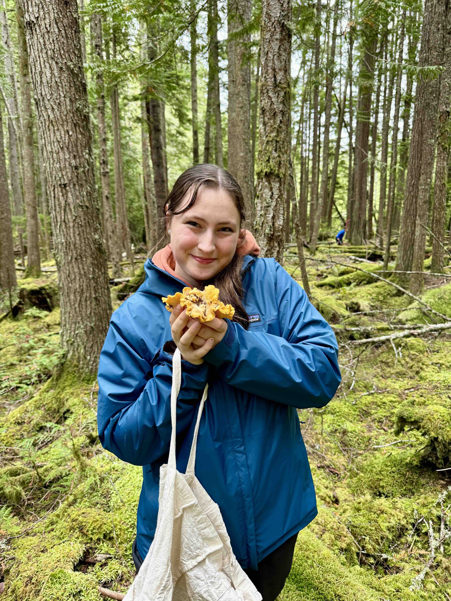
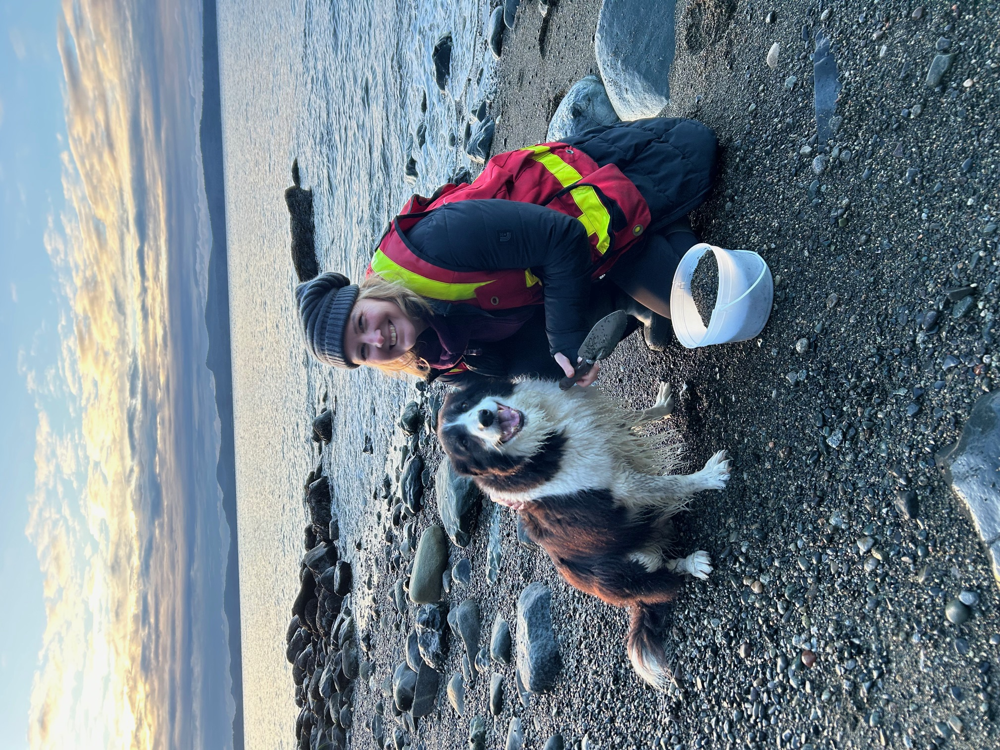
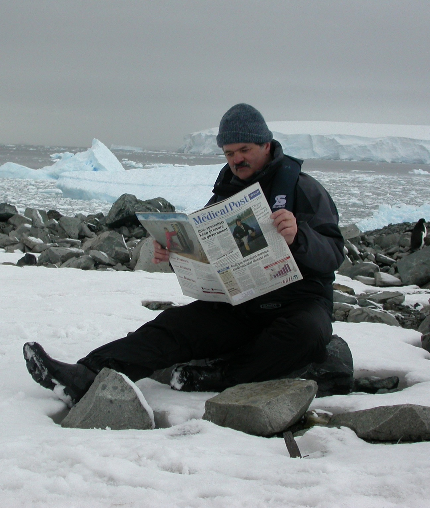

Here we will feature some of the Sunshine Coast community members leading or volunteering in some of the local biomonitoring programs. More to come!

Poppy Mackenzie Arnet, in her senior year in high school, has a passion for ecology. She figures she's been enamoured by the land and waters of British Columbia since before she could talk – "especially the incredible world of kelp forests!" Poppy has been volunteering for several months with the Loon Foundation, where she's had the opportunity to participate in a range of biomonitoring programs, including Juvenile Salmon, Rocky Intertidal, Water Quality, and Forage Fish Surveys. She was last seen manning a table at the Sunshine Coast Climate Faire in Gibsons.
Asked about a favourite, Poppy says "Picking a favourite is so hard! I think I would have to say the Rocky Intertidal Survey that I participated in last winter. It was grueling, wet, and cold, but SO rewarding with all of the incredible critters we were able to identify and the awesome team I was able to work alongside! This survey was the experience that pushed me to regularly volunteer and participate in so many more surveys and events. It was also my first time finding a nudibranch, which was the highlight of my entire month!"
A final thought from Poppy: "Community engagement and citizenship is about so much more than our human communities; it also includes the ecosystems that we are a part of! Feeling connected to the natural world is so grounding and joyful, an amazing side-effect that accompanies participation in biomonitoring. Through my volunteer work, I have learned so much, made incredible human connections, and participated in the protection of the extraordinary ecosystems that sustain the very lands we inhabit. I would encourage everyone to get involved in biomonitoring, there are so many diverse opportunities that can suit anyone under the sun!"
Update: Congratulations to Poppy, who has been awarded the 2026 Sargeant Bay Society Student Bursary. Poppy is heading to the University of Victoria to study Environmental Sciences.
Jenn Blancard has been volunteering in biomonitoring projects on the Sunshine Coast for almost 10 years. Over the course of these years, Jenn has volunteered counting bats, weeding turtle beaches, monitoring turtle hatchings, completing amphibian surveys, conducting larval Dungeness crab monitoring (including population genetics studies), and helping collect data for the Salish Sea Marine Survival Project. Recently, she has started doing water quality monitoring with the Hotel Lake Advisory Group. For work, she has played a central role in 11 marine coastal waters monitoring programs and one freshwater monitoring program through the Loon Foundation.
Asked if she had a favourite, Jenn responded, "They are all my favourite. If I had to choose the top 17, I may be able to narrow it down. Although I get really excited when we get cephalopods, which tend to be in the juvenile salmon survey or the light trap survey."
A final thought: "I have heard in the past that people are afraid to volunteer when the word biology or science is involved, as they don't feel like they have the skill set. I would love to challenge everyone to shed that assumption and come out to participate. You will learn that there are jobs for all: from handling organisms, to educating the public, to recording numbers, to filling buckets of water or managing the pike pole. Many hands make light work. And there is a lot of work to do."


Well-known naturalist Rand Rudland has been involved with biomonitoring for over 25 years and in as many programs. A recent focus has been on the Sunshine Coast Biodiversity Project with iNaturalist, which he initiated in 2020. The Project provides a portal for like-minded naturalists to post their sightings – photographic or audio – of any and all forms of life found within the SCRD. SC iNaturalist allows citizen scientists to establish a baseline understanding of what our local biodiversity looks like, and allows tracking of subsequent changes - both can inform research and policy.
Rand has also led numerous field trips with the Sunshine Coast Natural History Society (SCNHS) and the Loon Foundation for birding, forest ecosystem education, mosses/lichens/plants, and more. As president of the Sargeant Bay Society and VP of the SCNHS, Rand has been promoting natural history education with the design of all the relevant signs in Sargeant Bay Prov. Park, Smuggler Cove Marine Park and Tetrahedron Provincial Park.
And most recently? "My most recent excursion into natural history education is introducing the iNaturalist platform, and specifically the bioblitz concept, to elementary schools, starting with the NEST program at Davis Bay Elementary. I will be doing a similar program in the fall at Langdale Elementary. I recently led a hands-on 'Introduction to iNaturalist' for a Roberts Creek group who is beginning a monitoring project for the RC watershed."
And most rewarding? Rand identified the larger SC iNaturalist project, with the annual Christmas Bird Counts high on the list. You can learn a little more about the iNaturalist Sunshine Coast Biodiversity Project and its impact on research here.